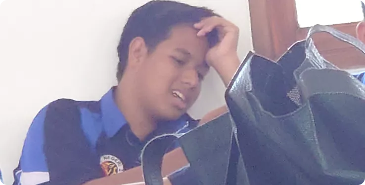
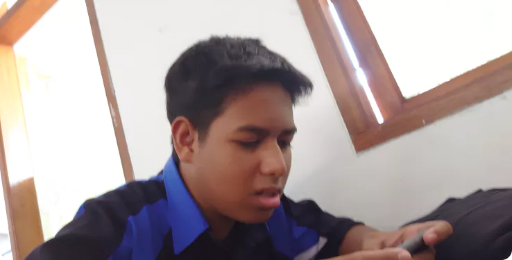

SEE MORE...


SISWA INI STRESS
AKIBAT GAME ONLINE Dapat dilihat dari wajahnya yang sangat bahagia akibat
dari permainan game online. Awalnya dia memainkan
game yang bernama Mobile Legends, lalu untuk menghilang
kan rasa sedihnya
ia pun berganti game bola bernama PES, sayangnya ia kalah lagi karena ia
fans ARSENAL “COUK COUK”